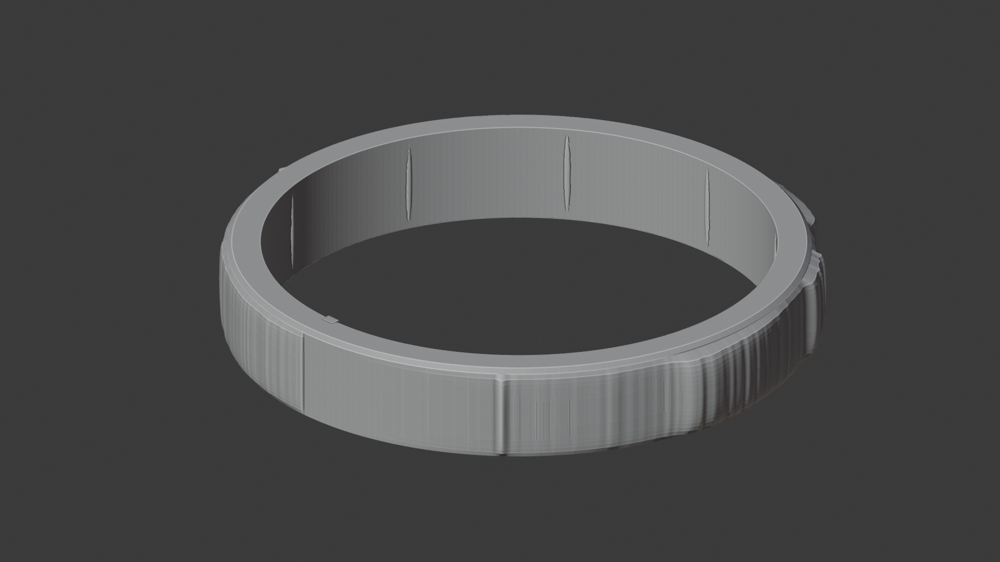
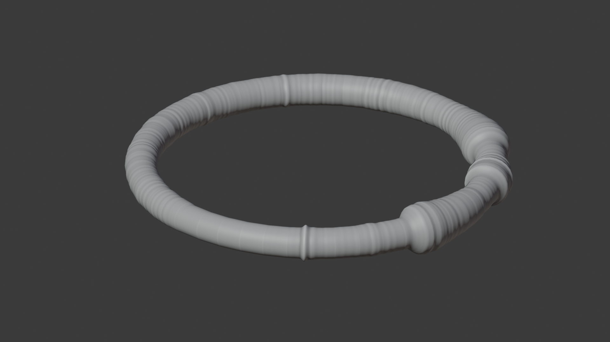
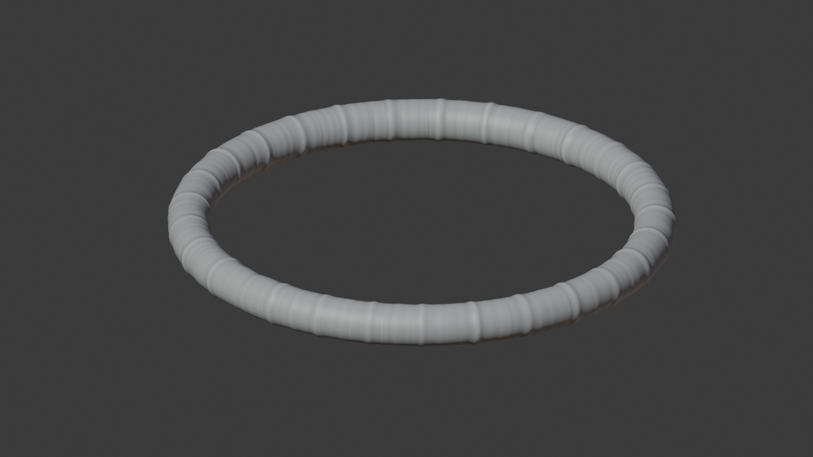

Cylindrical ring rendered image of a 3d printed audio spectrogram in the shape of a ring.

Concentrated ring Computer rendered image of a 3d printed audio spectrogram in the shape of a ring.

Spread out ringComputer rendered image of a 3d printed audio spectrogram in the shape of a ring.